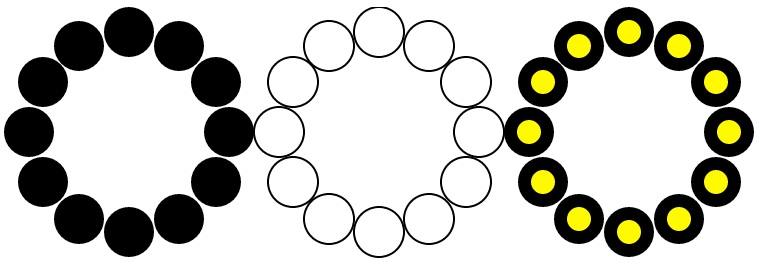

テンプレートと例外処理
標準テンプレート
標準テンプレートライブラリ(STL : Standard Template Library) には、頻繁に用いられる標準的なデータ構造や、<algorithm>ヘッダで定義されている各種データ処理が提供されているので、必要に応じて用いる事でプログラムの保守性と安定性が向上し、開発時間も短縮化できる。
ただし、汎用的なデータ構造や処理方法を用いるのが困難な場合には、テンプレートを無理に用いるのは避けて、共通部分をまとめた基底クラスの継承を適切に用いる方が良い。
テンプレートに関するより詳細な説明に関しては、例えばこちらを参照の事。
ベクトル（リスト）クラスの使用法
１次元の並びを動的に確保するにはリスト構造を用いた方が効率的な場合がある。 Ｃ＋＋言語では標準テンプレートライブラリが利用でき、リスト構造を扱うためのデータクラス std::vector<> がある。
使用例#include <vector>
#include "LineCircle.h"
int main () {
std::vector<LineCircle *> circles;
for (int i = 0; i < 5; i++) {
circles.push_back (new LineCircle ()); // リストデータの末尾に、LineCircleクラスの実体を追加する
}
ここで、vector の先頭に付けられた std:: は、STL で実装されていることを示す名前空間を示し、< > 内の LineCircle * は、このリスト構造の各要素に格納されるデータの方が LineCircle クラスへのアドレスであることを宣言している。
このように、抽象化されたデータが実際に扱う型を、データの生成時に指定できるクラスの宣言方法を【テンプレート化】と呼ぶ。 例えば、浮動小数点の値をリスト構造で保持したい場合には、
#include <vector>
int main () {
std::vector<float> myFloatList;
for (int i = 0; i < 10; i++) {
myFloatList.push_back ((float) i);
}
}
注： std:: という名前空間の指定は、ファイルの冒頭部で using namespace std; と宣言する事で省略が可能である。
また、vector クラスには演算子 [ ] が実装されており、配列の様な記述が可能である。
using namespace std;
int main () {
vector<float> myFloatList;
myFloatList[0] = 0; myFloatList[1] = 1;
for (int i=2; i<=10; i++) {
myFloatList[i] = myFloatList[i-1] + myFloatList[i-2]; // フィボナッチ数
}
...
イテレータ（反復子）を用いた繰返し処理の記述
STLのリスト構造クラスにはイテレータ（反復子）と呼ばれる、要素集合の個々の要素を参照するためのクラスが用意されており、 これは配列の要素を指すポインタを抽象化したものと考えられる。
std::vector<float>::iterator it = myFloatList.begin(); // イテレータのインスタンス化
while( it != myFloatList.end() ) { // 末尾要素まで
std::cout << *it << std::endl; // *演算子で間接参照（0, 1, 2, ...の値が、順次参照される）
++it; // イテレータを１つ進める
}
この様に、イテレータは繰り返し処理を分かり易く記述するのに用いられる。
テンプレートクラスの構成法
テンプレートクラスは自分で作成する事もできる。
作成方法は、抽象化するデータのクラスを変数（例えば T とする）として扱い、その変数を用いて
メンバ変数やメンバ関数で用いられるクラスを記述する。
また、重要な点として、テンプレートクラスは必ずヘッダファイル内で実装する
というルールがある。すなわち、.cpp ファイルを作成して個別にコンパイルすると、リンク時にエラーとなる。
テンプレートクラスの生成例
ヘッダファイルでのクラス宣言の冒頭部に template <class T>（抽象化するクラスの変数をTとする場合）を 記述する必要がある。下記の例は、環状に円を配置するクラス RingCircles に対して、 円のクラスを抽象化変数 T とするテンプレートクラスの構築例である。
ヘッダファイル（RingCircles.h）template <class T> class RingCircles {
private:
std::vector<T *> circles; // 環状に配置する円の要素
int x, y; // この円環群の相対的位置座標
public:
RingCircles (){}
void setCircles(int n) {
for (int i = 0; i < n; i++) {
…
circles.push_back(new T (…
}
…
} // 構築子：配置する円の個数が引数
void setPosition(int x, int y) { // 相対的位置座標の設定
this->x = x; this->y = y;
for (int i = 0; i < circles.size(); i++) {
circles[i]->setPosition(…
}
}
void draw(svg *svgObj) {
for (int i = 0; i < circles.size(); i++) {
circles[i]->draw(…
}
} // 描画関数
};
テンプレートクラス内では、ベクター std::vector<T *> クラスのイテレータ（反復子）は使用できないので、 コンパイルエラーとなる！
エラーとなる記述例std::vector<T *>::iterator it = circles.begin();
ポイント（テンプレート）
- 標準的なデータ構造を扱う関数は、テンプレートクラスとして実装されている
- テンプレートクラスでは、データの各要素のクラスを指定できる
- テンプレートクラスを独自に設計することができる
- データの種類に依存しない、汎用的な機能を実装する際には、テンプレートクラスとして設計することを試みる
例外処理（try 〜 catch 〜 throw）
Ｃ＋＋や Java では、プログラム実行時のエラー解析を容易にするために、例外処理(Exception)の機能が備わっている。
その使用方法は、エラーや例外が発生する可能性のあるコード部分を try {...} で囲み、その中で throw 文によって投げられた例外メッセージの 値を catch 文が受け取って、対応する処理を続く {...} の中に埋め込む。
例外処理文の構造
try {
// 例外を発生するプログラムコード（throw によって例外メッセージを送信する）
} catch ( 例外メッセージ ) {
// 例外の種類に依存する処理を実行するプログラムコード
}
実際には、標準ライブラリーで用意された例外クラス（std::exception）を継承して独自の例外クラスを設計し、そのクラスの メッセージを受け取るように実装される。詳細に関しては、＜こちら＞を参考にする事。
Circle に対する例外処理クラスの設計
ここでは、Circle クラスの属性値に不適切な値を代入した場合に呼び出される例外処理用のクラス CircleException を設計する。
CircleException ヘッダファイル実装例#pragma once
#include <exception>
#include <string>
class CircleException : public std::exception {
private:
std::string message; // エラーメッセージ
public:
CircleException(const std::string& msg) : message(msg) {};
virtual ~CircleException() throw() {};
void printStackTrace() const {
std::cerr << "Error in generating Circle : " << message << std::endl;
}
}
#include "CircleException.h"
class Circle {
protected:
int x, y;
int rad;
public:
Circle ();
Circle (int cx, int cy, int r = 10);
~Circle () {}
void setPosition (int x, int y) throw(CircleException);
void setRadius (int rad) throw(CircleException);
...
void Circle::setPosition (int x, int y) throw(CircleException) {
if (x < 0 || y < 0)
throw CircleException("Corrdinate of position is out of range!");
else
this->x = x; this->y = y;
}
void Circle::setRadius (int rad) throw(CircleException) {
if (rad <= 0)
throw CircleException("Radius is less than zero!");
else
this->rad = rad;
}
Circle circle();
...
try {
circle.setPosition(x, y); // x か y が負の値であれば CircleException をthrow
circle.setRadius (r); // r が０以下であれば CircleException をthrow
} catch (CircleException ce) {
ce.printStackTrace(); // エラーメッセージの表示
}
Exercise (No.5)
Extend the program of the last exercise as follows:
- Implement RingCircles class for arranging N circles attaching each other by designing it as template class so that the class of circles becomes changeable.
- Draw the three kinds of circles: (ColorCircle, LineCircle, DoubleCircle) by giving the total number as
int main(int argc, char *argv[]) { int n = atoi(argv[1]); // total number of circles svg svgObj; // object for generating a SVG document RingCircles<ColorCircle> cc(n); // synthesis of ColorCircle class cc.setPosition(x, y); // set the Position of a ring RingCircles<LineCircle> lc(n); // synthesis of LineCircle class lc.setPosition(x+offsetX, y); // set the Position of a ring // ... omitted below svgObj.open("RingCircles.html", 1280, 400); // Open the file cc.draw(&svgObj); // draw a ring (ColorCircle) lc.draw(&svgObj); // draw a ring (LineCircle) // ... omitted below svgObj.close(); // close the file } - Total number of arranged circles is given in launching
% ./a.out 12
- Implement exception handler against the inputted number of circles below 4 or above 100, where the class for handling exception is implemented as RingCirclesException that outputs error messages as:
Error in RingCircles ... the number of circles is too small!
for below 4, and
Error in RingCircles ... the number of circles is too large!
for above 100. - Color of circles are not given, and the default values are used.

Example of execution
提出課題 (その5)
前回の課題で作成した円を環状に配置するプログラムを、以下の様に拡張する。
- 与えられた円の要素を、互いに内接する様に環状にＮ個配置する機能を RingCircles クラスとして作成する。ただし、円の要素の型を変更できるテンプレートクラスとして設計する。
- 以下の様に、与えられた個数の円を３種類(ColorCircle, LineCircle, DoubleCircle)描画する。
int main(int argc, char *argv[]) { int n = atoi(argv[1]); // 円の個数 svg svgObj; // SVGドキュメントを生成するオブジェクト RingCircles<ColorCircle> cc(n); // 円環(ColorCircle)クラスの生成 cc.setPosition(x, y); // 円環の位置の設定 RingCircles<LineCircle> lc(n); // 円環(LineCircle)クラスの生成 lc.setPosition(x+offsetX, y); // 円環の位置の設定 // ... 以下省略 svgObj.open("RingCircles.html", 1280, 400); // ファイルを開く cc.draw(&svgObj); // 円環(ColorCircle)の描画 lc.draw(&svgObj); // 円環(LineCircle)の描画 // ... 以下省略 svgObj.close(); // ファイルを閉じる } - 配置する円の個数は実行時に与えるものとする
% ./a.out 12
- 円の配置個数として４個未満または100個を超える個数が指定された場合は、エラーとして例外処理する。
ただし、例外処理用のクラス RingCirclesException を作成して使用して、
４個未満の場合は
Error in RingCircles ... the number of circles is too small!
100個を超える場合は
Error in RingCircles ... the number of circles is too large!
のメッセージを出力して処理を終了する。 - 円の色は特に指定せず、デフォルトの値を適当に設定する。
円環群生成例